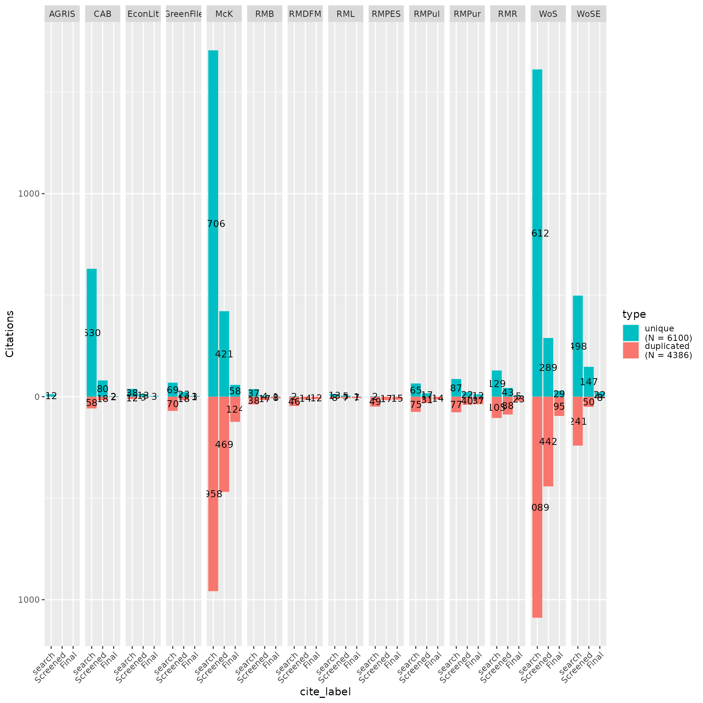

CiteSource - Long working example
Trevor Riley
2022-10-21
Source:vignettes/citesource_working_example_long.rmd
citesource_working_example_long.rmdAbout the package
CiteSource provides users with the ability to deduplicate references while maintaining customizable metadata. Instead of the traditional deduplication method where records are removed and only one record is selected to be retained, CiteSource retains each duplicate record while merging metadata into a single main record. This main record maintains user-customized metadata in three fields, “cite_source”, “cite_label” and “tag_naming”. In the merging process, select metadata fields are also automatically compared (currently DOI & Abstract) and the most complete metadata is used in the main record.
Installation
Use the following code to install CiteSource. Currently, CiteSource lives on GitHub and needs to be installed with the remotes package.
#Install the remotes packages to enable installation from GitHub
install.packages("remotes")
library(remotes)
#Install CiteSource
remotes::install_github("ESHackathon/CiteSource")After installation, you can load the package.
Import files from multiple sources
Users can import multiple RIS or bibtex files into CiteSource, which the user can label with source information such as database or platform. A second metadata field called ‘cite_labels’ can be used to specify other attributes. For example, a common use of CiteSource may be to examine the origin of records at different screening stages of a review. Search results from databases can be imported along with screened records and final included studies.
#Indicate location of citation files
## NOTE that short and long versions are separate in the working_example data folder
citation_files <- list.files(path=file.path("../tests/testthat/data", "working_example/long"), pattern = "\\.ris", full.names = TRUE)
citation_files
#> [1] "../tests/testthat/data/working_example/long/AGRIS.ris"
#> [2] "../tests/testthat/data/working_example/long/CAB.ris"
#> [3] "../tests/testthat/data/working_example/long/EconLit.ris"
#> [4] "../tests/testthat/data/working_example/long/Final.ris"
#> [5] "../tests/testthat/data/working_example/long/GreenFile.ris"
#> [6] "../tests/testthat/data/working_example/long/McK_exc.ris"
#> [7] "../tests/testthat/data/working_example/long/McK_inc.ris"
#> [8] "../tests/testthat/data/working_example/long/RM_Bowler.ris"
#> [9] "../tests/testthat/data/working_example/long/RM_Leisher.ris"
#> [10] "../tests/testthat/data/working_example/long/RM_Pullin.ris"
#> [11] "../tests/testthat/data/working_example/long/RM_Puri.ris"
#> [12] "../tests/testthat/data/working_example/long/RM_Roe.ris"
#> [13] "../tests/testthat/data/working_example/long/RM_Sammii_DFM.ris"
#> [14] "../tests/testthat/data/working_example/long/RM_Sammii_PES.ris"
#> [15] "../tests/testthat/data/working_example/long/TiAb.ris"
#> [16] "../tests/testthat/data/working_example/long/WoS_early.ris"
#> [17] "../tests/testthat/data/working_example/long/WoS.ris"
#Read citation files and store. Labels is used to compare stages of review.
##with all files seperate
## long version with all RM and McK broken out -> good example for seeing how heatmap is squeezed & limitations on upset plot due to high # of combinations
## Good example for later tagging RM versions in site_string since they are the same method (previous reviews), but different sources themselves
citations <- read_citations(citation_files,
cite_sources = c("AGRIS", "CAB", "EconLit", NA,
"GreenFile", "McK", "McK", "RMB", "RML", "RMPul", "RMPur", "RMR", "RMDFM",
"RMPES", NA, "WoS", "WoSE"),
cite_strings = c(NA, NA, NA, NA,
NA,"McKE", "MCKI", "B", "L", "Pul", "Pur", "RMR", "DFM",
"PES", NA, NA, NA),
cite_labels = c("search", "search", "search", "Final",
"search","search","search","search","search","search","search","search","search",
"search","Screened","search","search"),
tag_naming = "best_guess")
#> Import completed - with the following details:
#> file cite_source cite_string cite_label citations
#> 1 AGRIS.ris AGRIS <NA> search 12
#> 2 CAB.ris CAB <NA> search 687
#> 3 EconLit.ris EconLit <NA> search 50
#> 4 Final.ris <NA> <NA> search 243
#> 5 GreenFile.ris GreenFile <NA> search 139
#> 6 McK_exc.ris McK <NA> search 2099
#> 7 McK_inc.ris McK <NA> search 562
#> 8 RM_Bowler.ris RMB <NA> search 70
#> 9 RM_Leisher.ris RML <NA> search 17
#> 10 RM_Pullin.ris RMPul <NA> search 98
#> 11 RM_Puri.ris RMPur <NA> search 118
#> 12 RM_Roe.ris RMR <NA> search 188
#> 13 RM_Sammii_DFM.ris RMDFM <NA> search 19
#> 14 RM_Sammii_PES.ris RMPES <NA> search 20
#> 15 TiAb.ris <NA> <NA> search 1574
#> 16 WoS_early.ris WoS <NA> search 2550
#> 17 WoS.ris WoSE <NA> search 738
## short version with combined RM and McK files
#citations <- read_citations(citation_files,
# cite_sources = c("AGRIS", "CAB", "EconLit", NA,
# "GreenFile", "McK", "RM", NA, "WoS", "WoSE"),
# cite_labels = c("search","search", "search", "Final",
# "search","search","search","Screened", "search","search"),
# tag_naming = "best_guess")Deduplicate while maintaining source information
CiteSource allows users to merge duplicates while maintaining information in the cite_label and cite_source metadata field. Thus, information about the origin of the records is not lost in the deduplication process.
#Deduplicate records while maintaining source information and label information.
dedup_results <- dedup_citations(citations, merge_citations = TRUE)
#> formatting data...
#> identifying potential duplicates...
#> identified duplicates!
#> merging citations...
unique_citations <- dedup_results$unique
#Count number of unique and non-unique citations from different sources and labels
n_unique <- count_unique(unique_citations)
#Create dataframe indicating occurrence of records across sources or labels
source_comparison <- compare_sources(unique_citations, comp_type = "sources")
label_comparison <- compare_sources(unique_citations, comp_type = "labels")Source or method analysis
When teams are selecting databases for inclusion in a review it can be extremely difficult to determine the best resources and determine the ROI in terms of the time it takes to apply searches. This is especially true in environmental research where research is often cross-disciplinary. By tracking where/how each citation was found, the evidence synthesis community could in turn track the efficacy of various databases and identify the most relevant resources as it relates to their research topic. This idea can be extended to search string comparison as well as strategy and methodology comparison.
Plot overlap as a heatmap matrix
my_heatmap <- plot_source_overlap_heatmap(source_comparison)
my_heatmap 
Plot overlap as an upset plot
my_upset_plot <- plot_source_overlap_upset(source_comparison, decreasing = c(TRUE, TRUE))
#> Plotting a large number of sources. Consider reducing nset or sub-setting the data.
my_upset_plot
Review stage analysis
Once the title and abstract screening has been completed or once the final papers have been selected, users can analyze the contributions of each source or search method to these screening phases to better understand their impact on the review. By using the “cite_source” data along with the “cite_label” data, users can analyze the number of overlapping/unique records from each source or method.
Assess contribution of sources by review stage
my_contributions <- plot_contributions(n_unique, center = TRUE,
bar_order = c('search', 'Screened', 'Final'))
my_contributions
Documentation and output
In addition to the above visualizations, it may be useful to export datasets for additional analysis, for example to identify the origin of specific records. Presenting data in the form a search summary table can also provide a user with information about the specificity and recall of each database (see Bethel et al. 2021 for more about search summary tables.).